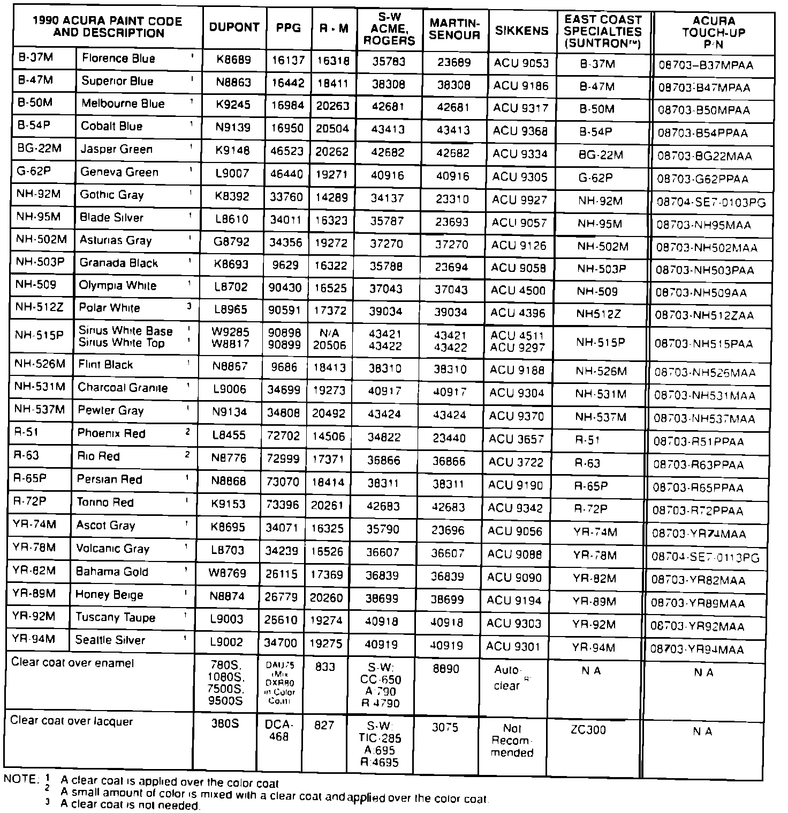
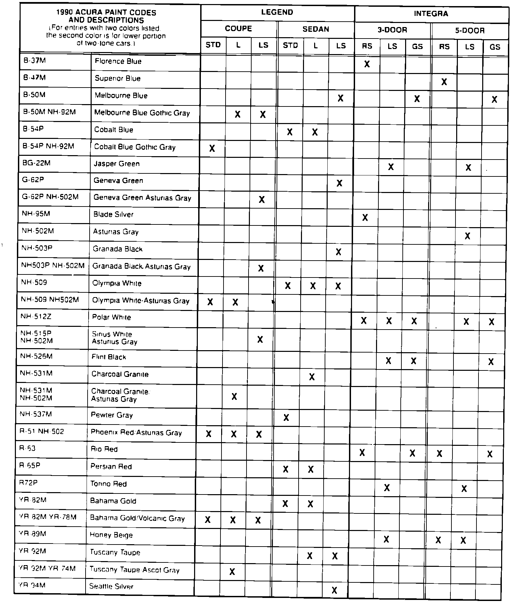

Paint Code Identification
October 16, 1989BULLETIN NO.
89-026
YEAR
1990
MODEL
ALL
VIN APPLICATION
ALL


1990 Acura Paint Codes
Paint formulations are determined by each paint company. For questions regarding formulas or matching. contact your local paint distributor or the paint company's nearest regional office. The original paint is acrylic enamel. Acura paint codes which include "M" or "P" are metallic colors.